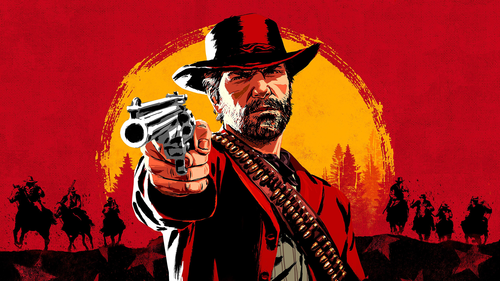
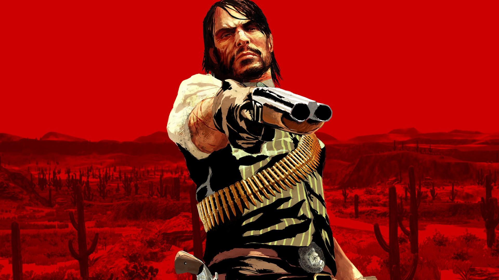
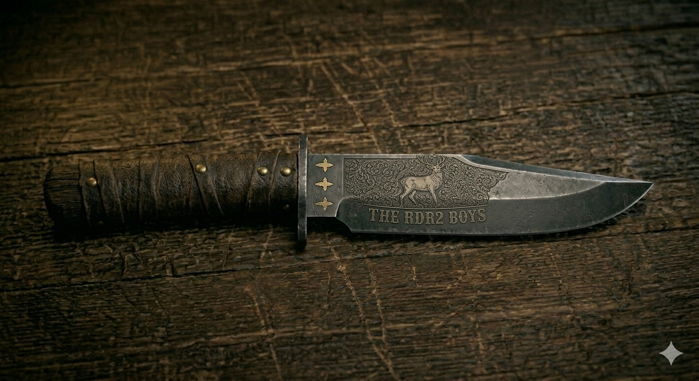

Red DeadRedemption
IIКінець епохи дикого заходу. Історія про честь, зраду та спокуту серед останніх днів лихих банд Америки.
Кінець епохи дикого заходу. Історія про честь, зраду та спокуту серед останніх днів лихих банд Америки.
Red Dead Redemption 2 епічна пригода у серці Америки 1899 року. Коли дикий захід згасає, Артур Морган та банда Ван дер Лінде борються за виживання у світі, де федеральні агенти загнали їх у кут.
Величезний живий відкритий світ із сотнями годин контенту, унікальними персонажами та динамічною погодою. Кожен твій вчинок має наслідки система честі змінює реакцію всього світу навколо.
Познайомитись з героями
Один із найстарших членів банди Ван дер Лінде. Сильний, досвідчений і жорсткий але здатний на справжнє співчуття. Його майбутнє залежить від вибору гравця.
→ Головний герой
Харизматичний лідер та ідеаліст, що вірить у свободу. Під тиском обставин поступово втрачає розум. Трагічна та небезпечна фігура одночасно.
→ Антагоніст / Союзник
Головний герой першої частини. У RDR2 молодий член банди та батько, що шукає шлях до чесного життя. Його трагічна доля відома з першої гри.
→ Ключовий персонаж
Легендарний поліцейський револьвер один з найкращих у грі. Відрізняється швидкострільністю та точністю, ідеальний для дуелей.

Надійна гвинтівка зі швидким перезарядженням. Ідеальна для середніх дистанцій і найпоширеніша зброя серед членів банди.

Двостволка смертоносна на близькій дистанції. Два постріли вирішують будь-який конфлікт у зачиненому просторі.

Вірний супутник у темряві. Використовується для прихованих вбивств, обробки дичини та виживання в дикій природі.
Просторі рівнини та густі ліси на півночі. Тут проходить більша частина сюжету банди.
Таємничі болота півдня з унікальною фауною та небезпечними таємницями у тумані.
Найбільше місто гри, натхненне Новим Орлеаном. Розкіш та злочинність пліч-о-пліч.
Засніжені вершини та крижані ущелини. Суворий клімат і рідкісні види тварин.
Дикі та негостинні землі. Лише найвідчайдушніші наважуються подорожувати тут.
+ ++
++